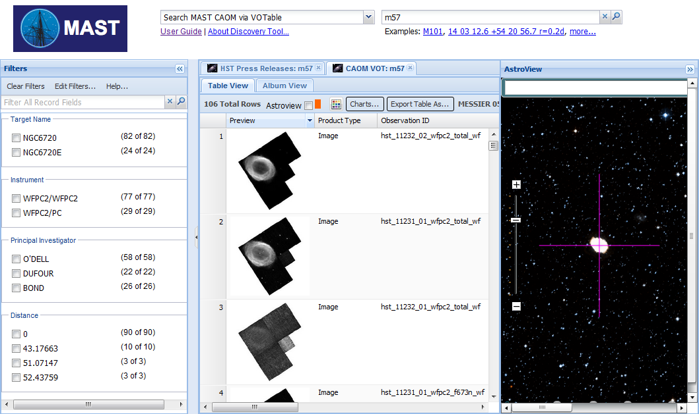

The MAST Portal
Version 1.1, 12/20/2011
Contents
- Introduction
- Initiating a Search
- Exploring Search Results
- Refining the Results with Filters
- Retrieving Results
- The AstroView Tool
- Tips & Tricks
- Video Demo
Introduction
The MAST Portal is a web application for searching repositories of information about Astronomical Data, Publications and Images.
(Note: Throughout this user's guide there are screenshots taken from a development environment that may include features or data states that are not normally reachable by users. They are only meant to serve as visual guides.)
 |
|
| Fig. 1—Anatomy of the MAST Portal as it appears prior to the first search. Circled numbers in orange are keyed to descriptions in the text. | |
The initial screen layout consists of the following components, numbered as in Fig. 1:
- 1. Data Collection Box
- Choose the collection to search. Results vary depending on the information contained within each particular collection.
- 2. Search Box
- Depending on the collection chosen, a hint appears describing the kind of query that should be performed.
- 3. Facet Filters Panel
- Applicable filters are grouped into facets by semantic type, and will appear in this panel. Note that the Filters panel can be resized or (un)hidden using screen widgets.
- 4. Data View Panel
- Presents data and images returned from the query or queries, sometimes allowing multiple views of a dataset, such as a grid layout or an album view.
- 5. Astroview Panel
- This panel may be optionally loaded by the tool. A Flash application, this powerful all-sky viewer provides visualization context and imagery for either aribtrary positions specified within the viewer itself or while being tied to data from Portal queries.
Initiating a Search
All searches begin by choosing a collection and entering either the name of an astronomical object, or the coordinates of a sky position in the search entry box (on the left in Fig. 2). A radius can be appended to the search by add "r=" and a radius, with units of "d", "m" or "s". Some collections have search radius limitations, and the default radius is usually .2 degrees. The search can be initiated by clicking the Search button or by pressing the Return key on your keyboard while the cursor is in the search entry box.
 |
|
| Fig. 2—Search panel include the Collection pulldown menu, Search box and button, as well as examples of valid search text. | |
Names of objects are passed to a name resolver (one of many Virtual Observatory services that support the Portal), which associates known object names with sky coordinates. A wide variety of catalog and common names can be resolved to known objects. Coordinates can be given in a variety of formats; right ascensions must be positive and southern declinations require a leading negative sign. Examples of valid names and coordinate formats are given below.
| Object Names | |
|---|---|
m101 |
Objects from standard catalogs such as Messier and NGC will be resolved |
Antennae |
Common names often work |
T Tau |
Variable star names often work |
BD+19 706 |
Star catalogs with coordinate symbols |
png 000.8-07.6 |
Other catalogs with coordinate and decimal symbols |
2MASS J04215943+1932063 |
All-sky catalogs with coordinate symbols |
TYC 1272-470-1 |
All-sky satellite catalogs with restricted symbols |
| Coordinates | |
14 03 12.6 54 20 56.7 |
Sexagesimal coordinates delimited with spaces |
14:03.210 54:20.945 |
Sexagesimal coordinates delimited with colons; decimal minutes/arcminutes |
14h03m12.6s +54d20m56.7s |
Sexagesimal coordinates with explicit hms/dms |
180.468 -18.866 |
Coordinates in decimal degrees |
Further rules and caveats for valid searches may be found in Tips & Notes.
Exploring Search Results
A successful search, such as that shown for M57 below, populates a new Search Results panel with a table of resources and a corresponding Filters panel applicable to these resources. The results of subsequent searches will be stored in new tables, and can be accessed by clicking on the tabs at the top of the Results panel. To eliminate a results table (and discard the results for that search), click the "x" icon on the tab. Concurrent searches are possible; if a new search is initiated prior to the last one completing, a new tab will be created while the previous search continues. Just below the tabs is a status panel with the following items from left to right:
- the number of rows retrieved (and update information for searches in progress)
- an Export Table As... button which can write the table of results to your local storage
- the object name and coordinates from the name resolver
- the search radius
|  | |
| Fig. 3—Appearance of the Portal after a search for m57 within radius = .2 degrees, showing the filters (left panel) that can be applied to the Search Results (center panel). The results of a prior search may be viewed by clicking the tab (labelled HST Press Releases: m57 in this case) at the top of the Search Results panel. | |
The records are listed in the table, one per row. Each record represents data about a particular image or object, with the columns defining each datum about the record. In the example above, each displayed record is about a WFC2 image that was found within the bounds of the search.
Search Details Pop-Up
Clicking on any row in the Search Results panel pops up a panel with summary information about the resource; clicking the double arrows at the bottom of this panel (labelled "Expand for Details") exposes all of the attributes for the resource.
 |
|
| Fig. 4—Summary of a m57 image, showing the summary description of the resource (left). Clicking the double-arrow at the lower-right of the pop-up brings up all available details, as shown at right. Different details panel formats exist for the various collections - for collections where the tool knows, for example, that there will be an image and a URL that links to a large-format version, it will pop up a details panel such as this one that links to it. Other image records may be displayed differently, and sometimes the format is so hard to determine that the tool can only provide a generic view of the data. | |
Refining Results with Filters
Many searches, particularly on popular targets or of a sufficiently large area of sky, generate sometimes hundreds or even thousands of rows. The Filters panel allows the user to restrict the list of services to those of most interest. A filter can be applied by clicking the check-box next to the filter type.
Filter Facets
The list of potential filters is quite large, and includes as many attributes of the matched data collections as the data providers offer. The filters in the panel are grouped into semantically related facets depending on the data. You can view the list of allowed facets by clicking the Edit Filters button at the top of the panel; select the desired facets by clicking the check-boxes in the pop-up window (middle) and clicking the Apply button. Note that not all facets are displayed or even available by default.
 |
||
| Fig. 5— The search has been filtered for rows where the Target Name is "NGC6720E". This updates the counts of the other facet values based on how many other rows can be selected. For example, 18 of the original 77 rows where the Instrument was WFPC2/WFPC2 intersect with the currently applied filters, and two of the PI fields are grayed out because they cannot possibly intersect with the current selection. Note: NGC6720 is not grayed out because values within a particular facet are joined as a union, i.e. where Target Name is NGC6720 or NGC6720E. The filters that are visible in the panel may be changed by clicking the Edit Filters button at the top and checking the filters of interest in the pop-up window (middle). Regular expressions may also be used as filters by entering a regular expression in the dialog box near the top of the panel. | ||
Retrieving Results
A core capability of the MAST Portal is to enable users to download resources, or to direct them to other desktop applications for analysis. As used here, resources is a rather generic term used to refer to individual data files (images, tables, and the like), or collections of them, or to services that provide data upon request. Any of these resources may be of use scientifically, and the Portal has simple mechanisms for retrieving them.
Images
Continuing with the example shown in Fig. 4 (details of a M57 image), clicking the image will bring up a large-scale version of the image using the HLA's FITS viewer.
Tables
Downloading catalogs or tables is somewhat simpler than downloading images, in that any table displayed in the results panel may be saved with the following steps:
- click the Export Table As... button
- select the output format and other parameters from the pop-up panel
- click the Export button
This procedure applies to search results as well. The operation may be aborted by clicking the Cancel button or dismissing the pop-up panel by clicking the "x" icon. Figure 8 illustrates these steps for sources extracted from the NOMAD catalog that lie within 1 arcmin of M57. This search continues the example from, Fig. 3: the NOMAD resource (row 18 of the original search) was loaded into a new tab, labelled "M57 r=1m: NOMAD".
Broadcasting Data via SAMP
Many popular applications, including TOPCAT and DS9, have the ability to broadcast in-memory data to another desktop application that is similarly enabled. The Portal can also broadcast a table, via the Simple Application Messaging Protocol (SAMP). The procedure is exactly the same as illustrated in Fig. 8 for downloading a table, except that instead of clicking Export as the last step, click the Broadcast button. Note that at least one other SAMP-enabled application, such as TOPCAT or Aladin must already be running in order for data to be transferred anywhere. When a table is broadcast (in this case, from the Portal to TOPCAT) for the first time during a session a security notification may appear.
Finally, note that the Portal does not currently support receiving broadcasts of data from other applications.
The AstroView Tool
The AstroView Tool is an all-sky-viewing component developed in Flash. It was developed as a standalone application, but was later afforded a means of interaction with the Portal. It uses the same positional search and name- resolving capabilities as the Portal, but instead of displaying tabular results and image files it presents a view of the sky from Earth. This view can be panned, zoomed and searched, and the imagery displayed can be changed based on the survey selected using the tool.
One interaction between the Portal and AstroView is the notion of projecting image "footprints", i.e. the detector shape, size and orientation for a given image, onto the survey images. Figure 6 demonstrates this.
 |
||
| Fig. 6— The Astroview checkbox has been checked, indicating that footprints from the current selection should be overlayed onto the AstroView component. | ||
Tips & Notes
When formulating a search, note the following:
- Leading zeros are ignored in the name. For example, M5 returns results for object Messier 005.
- Object names are not case-sensitive, and spaces between the characters (e.g. M51 and M 51) are ignored unless the space indicates a real character in the name.
- If an object name is incomplete the name resolvers from NED and SIMBAD return the closest match. This can lead to surprising results however.
- All coordinates are interpreted as J2000.
- Maximum search radius is limited on a collection-by-collection basis.
- Queries are currently limited to a single object or position. However, multiple queries may be submitted sequentially, even if one or more queries are still executing.
When downloading an image, note the following:
- Large images may take a while to download. Download progress can only be monitored using browser tools.
- Downloading is disabled for data products that are embargoed by the provider. It may not be obvious when this happens, except that no file will be downloaded to your computer.
When downloading a table, note the following:
- The Export Table As... operation refers to the currently visible table, and not to a selected row within the table.
When broadcasting a table, note the following:
- At least one other SAMP-enabled application, such as TOPCAT or Aladin must already be running in order for data to be sent anywhere.
- The MAST Portal cannot currently receive data sent from other applications.
Tabs of search results are not saved between sessions; once the application has been abandoned, returning to it will not bring up previously searched objects.
Video Demo
To help improve the MAST Portal, please send feedback to The MAST Portal